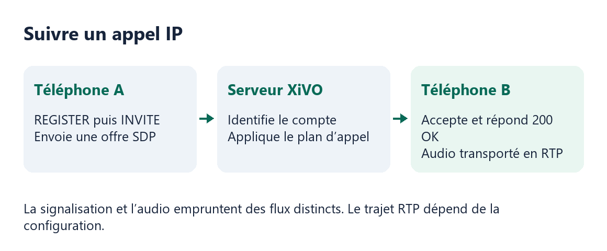
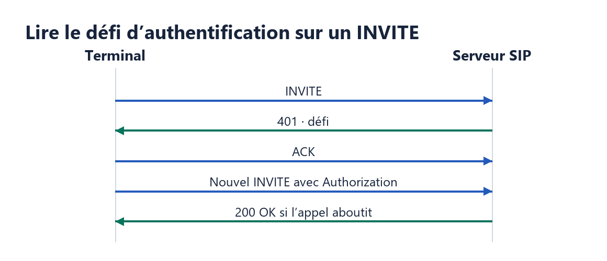

Comprendre le cours
Reconnaître la signalisation et le transport de la voix
Un IPBX (central téléphonique sur IP) est un central téléphonique sur IP. Un compte SIP (signalisation qui établit, modifie ou termine un appel) et un numéro d’extension peuvent avoir des valeurs différentes. L’extension sert au plan de numérotation, tandis que l’identifiant sert notamment à l’authentification.
Un échange SIP peut comporter INVITE → 100 Trying → 180 Ringing → 200 OK → ACK. BYE termine le dialogue ouvert. SDP (description des médias et paramètres d’une session) annonce notamment les codecs et les ports attendus.

Lire un défi d’authentification et négocier le codec
Avec l’authentification Digest, le champ Authorization contient une réponse calculée au défi. La capture ne montre pas un simple envoi du mot de passe chiffré. Une succession de défis sans succès demande de vérifier l’identifiant, le secret, le domaine et la correspondance au compte.
G.711 encode la voix à 64 kbit/s hors en-têtes. Affiche l’offre et la réponse SDP et vérifie la variante utilisée. Avec le profil RTP/AVP, PT 0 correspond à PCMU et PT 8 à PCMA.

Acheminer des numéros par un trunk et un plan d’appel
Pour un scénario avec numéros internes à quatre chiffres et numéros sortants à dix chiffres, place les règles dans le contexte utilisé par les lignes. Associe la règle sortante au trunk et configure la destination entrante dans le contexte attendu.
Un groupe de sonnerie distribue un appel à plusieurs postes selon une stratégie. Une messagerie prend le relais sur non-réponse si la redirection est configurée. Un test doit distinguer l’appel direct, la sonnerie du groupe et le dépôt du message.
Pourquoi un premier 401 peut-il accompagner une inscription réussie ?
Dans l’échange d’inscription SIP (Session Initiation Protocol), le téléphone envoie REGISTER. Le serveur peut répondre 401 avec un défi d’authentification. Le téléphone calcule une réponse à ce défi puis envoie un nouveau REGISTER.
Lis la suite de la capture avant de conclure. Un 200 OK après la deuxième demande confirme l’acceptation de l’inscription. Si la demande authentifiée reste refusée, vérifie l’identité utilisée et le domaine d’authentification annoncé. L’audio se vérifie ensuite lors d’un appel.
Sigles et acronymes
- ACK · Acknowledgment
- Accusé de réception.
Exemple. Après un SYN-ACK, le client envoie un ACK pour confirmer l’établissement TCP. - IP · Internet Protocol
- Protocole d’adressage et d’acheminement des paquets.
Exemple. Le routeur lit l’IP de destination pour choisir où envoyer le paquet. - IPBX · Internet Protocol Private Branch Exchange
- Central téléphonique sur IP.
Exemple. Il associe le numéro 201 à un téléphone et dirige les appels vers lui. - PCMA · Pulse Code Modulation A-law
- Variante A-law de l’audio G.711.
Exemple. Dans un flux RTP avec le profil AVP, le type de charge statique 8 correspond à PCMA. - PCMU · Pulse Code Modulation μ-law
- Variante μ-law de l’audio G.711.
Exemple. Avec le profil RTP AVP, le type statique 0 correspond à PCMU. - RTP · Real-time Transport Protocol
- Transport des médias en temps réel.
Exemple. Après la négociation SIP, les échantillons de voix circulent dans RTP. - SDP · Session Description Protocol
- Description des médias et paramètres d’une session.
Exemple. L’offre SDP indique quels codecs audio et quels ports utiliser. - SIP · Session Initiation Protocol
- Signalisation qui établit, modifie ou termine un appel.
Exemple. Un téléphone envoie INVITE pour proposer un appel. - UDP · User Datagram Protocol
- Transport par datagrammes sans établissement de connexion.
Exemple. Un client peut envoyer une requête DNS classique dans un datagramme UDP.
Du cours aux TD et TP
Les questions proviennent du TP XiVO conservé dans le compte rendu. Les identifiants et configurations du laboratoire ont été remplacés par des exemples. Le sujet séparé n’a pas été retrouvé.
Questions TD & TP
TP XiVO · Créer les lignes et vérifier l’enregistrement
Énoncé reformulé. Créer deux lignes locales, configurer les téléphones et montrer qu’ils sont joignables.
- Dans la configuration IPBX, crée deux utilisateurs, associe une ligne SIP à chacun, puis affecte deux extensions non utilisées dans le bon contexte.
- Renseigne l’adresse du serveur, l’identifiant de la ligne et le secret dans chaque téléphone. Dans Asterisk, consulte
pjsip show endpointspuispjsip show contactspour vérifier la présence des contacts. - Teste dans les deux sens. Si un poste ne s’enregistre pas, vérifie d’abord son accès réseau et sa configuration SIP avant de modifier le plan d’appel.
TP XiVO · Expliquer le 401 et retrouver le codec de l’appel
Énoncé reformulé. Lire les messages qui établissent l’appel et identifier le codec du flux média.
- Filtre avec
sip || rtp. Sélectionne une conversation et retrouveINVITE, le 401, éventuellement l’ACK et la nouvelle invitation authentifiée. - Dans SDP, compare
m=audioeta=rtpmap, puis relève le type de charge utile et les adresses observées. Si Wireshark ne reconnaît pas RTP automatiquement, vérifie la négociation avant d’utiliser « Décoder comme » sur le flux UDP. - Note si RTP est visible dans les deux sens. Le codec G.711 observé dans le compte rendu se vérifie sur ta propre capture.
TP XiVO · Faire passer les appels par le trunk et tester la messagerie
Énoncé reformulé. Relier deux systèmes via un trunk, définir les destinations, puis tester un groupe et la messagerie sur non-réponse.
- Dans « Gestion des interconnexions », crée le trunk SIP. S’il utilise un enregistrement sortant, vérifie son état avec
pjsip show registrations. Un trunk configuré par adresses peut fonctionner sans cet enregistrement. - Dans les contextes et routes d’appel, associe le motif de sortie au trunk et dirige les appels entrants vers leur destination. Teste chaque sens et relève la règle utilisée avant de modifier plusieurs paramètres.
- Crée un groupe avec plusieurs extensions, configure sa stratégie et le délai de non-réponse, puis affecte la boîte vocale. Dépose un message et vérifie sa récupération avec le code configuré dans la maquette.